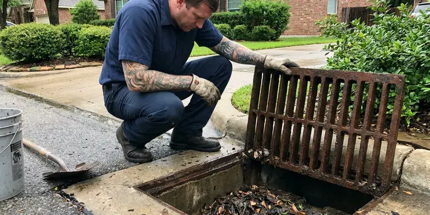

Slab Leak Detection in Layton, UT
Warm spot on the floor or a meter that never stops in Layton, UT? BPK Plumbing pinpoints leaks under your slab without tearing up the whole floor.
- Expert Plumbers
- Foundation Protection
- Pinpoint Acoustic Detection
- Advanced Diagnostics

Need Slab Leak Detection in Layton, UT?
Call now and we will confirm whether you have a slab leak and exactly where it is.
Reliable Slab Leak Detection Services in Layton, UT
BPK Plumbing specializes in accurate slab leak detection for homes across Layton, UT. A slab leak, often hidden beneath your concrete foundation, can cause significant damage if not addressed quickly.
Our expertise includes:
- Thermal imaging to trace hot water leaks through flooring
- Thermal imaging to identify subtle temperature changes
- Video inspection for pipe condition assessment

Additional Plumbing Maintenance Services in Layton, UT
Our maintenance and specialty plumbing services in Layton, UT protect your home year-round and extend the life of every system.


Customers
Why Choose BPK Plumbing for Slab Leak Detection in Layton, UT?
We locate the leak, explain your repair options and help you decide between spot repair, rerouting and repiping. Our recommendations are based on the condition of your pipes, not on selling the largest job.
- Foundation Focus, Our methods are designed to protect your home's structural integrity, a critical concern for Utah homeowners.
- Foundation Safety, Slab leaks can erode the soil beneath your foundation, leading to cracks, shifting and expensive structural repairs if not addressed promptly.
- Local Expertise, Understanding the local climate and common foundation types in Utah helps us diagnose issues more quickly and more effectively.
Citywide Coverage
Whether your home sits on a post-tension slab in a newer Layton community or a conventional slab in an older area, we can locate the leak. We schedule quickly because slab leaks get worse over time.
Experienced Team
Our team of licensed plumbers has extensive experience with slab leak detection and is trained in how climate and soil conditions affect slab plumbing. We know how shifting soils can stress underground pipes, leading to leaks.
Safety-First Approach
At BPK Plumbing, safety and code compliance are paramount for every slab leak detection project. We adhere to all local plumbing codes in Layton, UT and state regulations to protect the integrity and safety of your home's plumbing system.
Trusted Certified Layton Plumbing Services Professionals
At BPK Plumbing, we take pride in providing licensed, certified plumbing services throughout Layton, UT. Backed by recognized industry credentials, our experienced plumbers combine technical skill with genuine customer care. Whether it is repair, installation, or maintenance, we follow strict safety and quality standards to deliver lasting results you can trust.
Call Us Now PHCC Plumbing Contractor Recognition
PHCC Plumbing Contractor Recognition Better Business Bureau (BBB) Accreditation
Better Business Bureau (BBB) Accreditation Angi Certified Pro
Angi Certified Pro ISO 9001 Quality Management Certification
ISO 9001 Quality Management CertificationPrecise Slab Leak Detection Services in Layton, UT
Non-Invasive Leak Detection in Layton, UT
Our primary goal is to locate your slab leak with the least amount of disruption possible. We favor non-invasive techniques like acoustic and thermal imaging before considering any intrusive methods. This approach saves your home in Layton, UT from unnecessary damage, preserves your landscaping and lowers the overall cost and time of the repair process.

Acoustic Slab Leak Detection in Layton
Our technicians use highly sensitive acoustic listening devices to pinpoint the exact location of a leak under your slab. This method involves listening for the faint sound of escaping water, even through concrete. It's particularly effective for pressurized water lines, allowing us to find leaks without unnecessary excavation and minimizing disruption to your Layton home.
Slab Leak Reroutes in Layton
Rerouting abandons the leaking line under the slab and runs new pipe through the walls or attic. It avoids breaking concrete and often costs less than direct access under finished floors. We typically use PEX for reroutes because it handles heat and resists hard-water corrosion. This option is popular when the slab is covered in tile or hardwood.
Pressure Testing & Isolation in Layton
When a leak is suspected, we can perform pressure tests on individual water lines. By isolating sections of your plumbing system and monitoring pressure gauges, we can confirm the presence of a leak and often determine which particular line is compromised. This systematic approach is crucial for homes with complex plumbing layouts, giving you an accurate diagnosis before any excavation in Layton, UT.
Electronic Leak Detection in Layton
For hard-to-find leaks, our electronic leak detection equipment sends a signal through your pipes and measures changes that indicate a breach. This technology allows us to locate leaks in many pipe materials, including copper, PEX and PVC, commonly found in Layton homes. It helps prevent exploratory digging, saving you time and money.
Electronic Acoustic Leak Detection in Layton
Our team uses electronic listening devices to pinpoint the precise location of a slab leak. These highly sensitive microphones can detect the faint sound of water escaping from a pressurized pipe under your foundation. This non-invasive method helps us avoid unnecessary concrete breaking, saving you time and money on repairs. It's especially effective for copper and PEX lines commonly found in Layton homes.
Leak Detection for Older Utah Homes in Layton, UT
Many older homes in Layton, UT have copper or galvanized steel pipes that are more susceptible to corrosion and leaks over time. Our technicians are highly experienced in detecting leaks in these older systems, understanding their common failure points. We provide careful analysis for the challenges presented by vintage plumbing under concrete slabs.

Repiping After Multiple Slab Leaks in Layton, UT
If your home has had two or more slab leaks, the remaining pipe is likely corroded too. Repiping replaces all supply lines with new PEX or copper run through the walls and attic. It is a bigger project, but it ends the cycle of repeat slab leaks. We can typically complete a full repipe in two to four days.
Slab Leak Detection Near Me in Layton, UT
We know the slab types and plumbing materials used in homes built across different decades around Layton. That background helps us locate leaks faster and recommend the right repair. Local service also means simple follow-up if anything comes up later.
When you search for "slab leak detection near me" in Layton, UT, BPK Plumbing is your local, dependable expert. We are very familiar with the plumbing infrastructure and common issues affecting homes in this area, including those caused by climate and soil conditions. Our proximity allows for quick response times and personalized service.
BPK Plumbing at a Glance
- Fully licensed plumbing team covering Layton, UT
- Same-day appointments and 24/7 emergency response
- Upfront, flat-rate pricing before work begins
- 4.8-star rated by 470+ Utah customers
Layton Map
Layton Information
- Population
- 83,516
- Area codes
- 801/385/435
- Service area
- Layton and communities within 40 miles
- Nearby
- Ogden, Salt Lake City, West Valley City, Millcreek
Many homes in Layton, UT are built on concrete slabs with water lines running underneath, which makes under-slab pipe leaks one of the most frequent and costly plumbing problems in the area. Fast growth means much of the housing in Utah is relatively new, with PEX supply lines and plastic drains in most recent construction.
Expert Services
Trust our professionals for reliable BPK Plumbing solutions in Layton, UT.
Our Specialized Plumbing Services in Layton, UT
At BPK Plumbing, we provide a complete range of plumbing services across Layton, UT. From leak detection to full system installations, our team ensures fast, precise, and affordable service for both residential and commercial properties. Explore our core services below:


How Our Slab Leak Detection Process Works in Layton, UT
We follow a step-by-step approach to accurately pinpoint the source of your slab leak, delivering efficient and effective solutions for properties in Layton, UT.
Request a Quote
Contact BPK Plumbing at (385) 543-4073 to schedule your slab leak detection service. Our friendly staff will gather initial information about your concerns and set up a convenient appointment time.
On-Site Inspection
Our certified technician will arrive at your home to perform a comprehensive visual inspection and initial assessment of your plumbing system, looking for signs of a leak.
Advanced Detection
Using specialized tools like acoustic listening devices, thermal cameras or electronic leak detectors, we'll pinpoint the exact location of the slab leak with high accuracy.
Frequently Asked Questions About Slab Leak Detection in Layton
The cost for professional slab leak detection in Layton, UT typically ranges from $250 to $700, depending on the complexity of the leak and the time required for diagnosis. This initial detection fee is separate from any repair costs, which can vary widely based on the leak's location and required pipe repair.
For significant slab leak repairs, especially those involving excavation or extensive re-piping, a plumbing permit from the local building department is often required. BPK Plumbing handles all necessary permitting processes so your repair is compliant with local codes and regulations, protecting your investment.
Direct repair works well for a single leak on otherwise healthy pipe in an accessible spot. Rerouting is often better under tile or hardwood and avoids future leaks on that line. We help you compare both.
Reroutes and repipes often require a plumbing permit, while small direct repairs may not. Requirements vary by city and county. We take care of permits and inspections when needed.
BPK Plumbing relies on industry-leading brands for our slab leak detection equipment, including but not limited to LeakTronics, FLIR thermal cameras and specialized acoustic sensors. These tools are chosen for their accuracy and reliability in various leak detection scenarios, delivering the best results for your home.
Common signs of a slab leak in Utah homes include sudden increases in water bills, warm spots on your floor, the sound of running water when no fixtures are in use, damp or mildewy smells and visible cracks in your foundation or walls. Pooling water outside your home near the foundation can also be a strong indicator.
Yes, BPK Plumbing stands behind our work. We offer a warranty on our slab leak detection services, standing behind the accuracy of our findings. Any subsequent repair work performed by us also comes with a comprehensive warranty on parts and labor, providing you with peace of mind.
Some homeowner's insurance policies may cover the cost of accessing and repairing the slab leak, particularly if the leak was sudden and accidental. However, coverage often varies, and damage caused by long-term neglect might not be covered. We recommend checking your specific policy details or contacting your insurance provider for clarification.
What People Are Saying About Our Plumbing Experts?

Robert G.
The trenchless sewer replacement saved our front yard. They walked us through the camera inspection footage first so we knew exactly what we were paying for.
Sewer Line Replacement · Layton, UT
Mark T.
When our office needed drain cleaning, BPK Plumbing provided quick, reliable service. The plumber arrived on time and made sure every drain flowed perfectly before leaving. Very satisfied.
Drain Cleaning · Murray, UT
Emily R.
I called BPK Plumbing for plumbing repair, and the technician was fast, polite, and thorough. They explained the problem clearly and fixed it the same day. I will definitely hire them again. Highly recommended!
Plumbing Repair · West Valley City, UTJames P.
Our commercial plumbing system had a leak under the sink, and BPK Plumbing handled it professionally. The plumbers arrived quickly and restored everything without disruption to our customers.
Commercial Plumbing · Murray, UT
Laura S.
I scheduled a water heater replacement, and the team made the process smooth and affordable. The new unit works perfectly, and they cleaned up after completing the job.
Water Heater Replacement · West Valley City, UTSofia M.
Two new toilets installed in one visit, no mess left behind, and the tech even adjusted a faucet he noticed was dripping. Fair pricing and really friendly.
Toilet Installation · Murray, UT